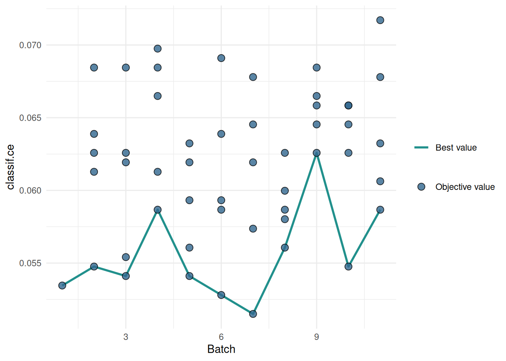

library(mlr3tuning)
library(mlr3learners)
learner = lrn("classif.ranger",
mtry.ratio = to_tune(0, 1),
replace = to_tune(),
sample.fraction = to_tune(1e-1, 1),
num.trees = to_tune(1, 2000)
)Scope
The predictive performance of modern machine learning algorithms is highly dependent on the choice of their hyperparameter configuration. Options for setting hyperparameters are tuning, manual selection by the user, and using the default configuration of the algorithm. The default configurations are chosen to work with a wide range of data sets but they usually do not achieve the best predictive performance. When tuning a learner in mlr3, we can run the default configuration as a baseline. Seeing how well it performs will tell us whether tuning pays off. If the optimized configurations perform worse, we could expand the search space or try a different optimization algorithm. Of course, it could also be that tuning on the given data set is simply not worth it.
Probst, Boulesteix, and Bischl (2019) studied the tunability of machine learning algorithms. They found that the tunability of algorithms varies widely. Algorithms like glmnet and XGBoost are highly tunable, while algorithms like random forests work well with their default configuration. The highly tunable algorithms should thus beat their baselines more easily with optimized hyperparameters. In this article, we will tune the hyperparameters of a random forest and compare the performance of the default configuration with the optimized configurations.
Example
We tune the hyperparameters of the ranger learner on the spam data set. The search space is taken from Bischl et al. (2021).
When creating the tuning instance, we pass the mlr3tuning.default_configuration callback to test the default hyperparameter configuration. The default configuration is evaluated in the first batch of the tuning run. The other batches use the specified tuning method. In this example, they are randomly drawn configurations.
instance = tune(
tuner = tnr("random_search", batch_size = 5),
task = tsk("spam"),
learner = learner,
resampling = rsmp ("holdout"),
measures = msr("classif.ce"),
term_evals = 51,
callbacks = clbk("mlr3tuning.default_configuration")
)The default configuration is recorded in the first row of the archive. The other rows contain the results of the random search.
as.data.table(instance$archive)[, .(batch_nr, mtry.ratio, replace, sample.fraction, num.trees, classif.ce)] batch_nr mtry.ratio replace sample.fraction num.trees classif.ce
1: 1 0.1228070 TRUE 1.0000000 500 0.05345502
2: 2 0.3501304 FALSE 0.7508930 1333 0.05475880
3: 2 0.6235093 FALSE 0.3830663 682 0.06388527
4: 2 0.8002110 FALSE 0.8686475 466 0.06127771
5: 2 0.2390842 TRUE 0.4383263 1081 0.06258149
---
47: 11 0.2220490 TRUE 0.3372232 486 0.06062581
48: 11 0.9806011 FALSE 0.6418448 773 0.06323338
49: 11 0.8375713 FALSE 0.2742567 1964 0.06779661
50: 11 0.9514603 FALSE 0.9537379 626 0.07170795
51: 11 0.8203689 FALSE 0.8481546 295 0.05867014We plot the performances of the evaluated hyperparameter configurations. The blue line connects the best configuration of each batch. We see that the default configuration already performs well and the optimized configurations can not beat it.
library(mlr3viz)
autoplot(instance, type = "performance")
Conlcusion
The time required to test the default configuration is negligible compared to the time required to run the hyperparameter optimization. It gives us a valuable indication of whether our tuning is properly configured. Running the default configuration as a baseline is a good practice that should be used in every tuning run.
Session Information
sessioninfo::session_info(info = "packages")═ Session info ═══════════════════════════════════════════════════════════════════════════════════════════════════════
─ Packages ───────────────────────────────────────────────────────────────────────────────────────────────────────────
! package * version date (UTC) lib source
backports 1.5.0 2024-05-23 [1] CRAN (R 4.4.1)
bbotk 1.1.1 2024-10-15 [1] CRAN (R 4.4.1)
checkmate 2.3.2 2024-07-29 [1] CRAN (R 4.4.1)
cli 3.6.3 2024-06-21 [1] CRAN (R 4.4.1)
P codetools 0.2-20 2024-03-31 [?] CRAN (R 4.4.0)
colorspace 2.1-1 2024-07-26 [1] CRAN (R 4.4.1)
crayon 1.5.3 2024-06-20 [1] CRAN (R 4.4.1)
data.table * 1.16.2 2024-10-10 [1] CRAN (R 4.4.1)
digest 0.6.37 2024-08-19 [1] CRAN (R 4.4.1)
dplyr 1.1.4 2023-11-17 [1] CRAN (R 4.4.1)
evaluate 1.0.1 2024-10-10 [1] CRAN (R 4.4.1)
fansi 1.0.6 2023-12-08 [1] CRAN (R 4.4.1)
farver 2.1.2 2024-05-13 [1] CRAN (R 4.4.1)
fastmap 1.2.0 2024-05-15 [1] CRAN (R 4.4.1)
future 1.34.0 2024-07-29 [1] CRAN (R 4.4.1)
future.apply 1.11.2 2024-03-28 [1] CRAN (R 4.4.1)
generics 0.1.3 2022-07-05 [1] CRAN (R 4.4.1)
ggplot2 3.5.1 2024-04-23 [1] CRAN (R 4.4.1)
globals 0.16.3 2024-03-08 [1] CRAN (R 4.4.1)
glue 1.8.0 2024-09-30 [1] CRAN (R 4.4.1)
gridExtra 2.3 2017-09-09 [1] CRAN (R 4.4.1)
gtable 0.3.5 2024-04-22 [1] CRAN (R 4.4.1)
htmltools 0.5.8.1 2024-04-04 [1] CRAN (R 4.4.1)
htmlwidgets 1.6.4 2023-12-06 [1] CRAN (R 4.4.1)
jsonlite 1.8.9 2024-09-20 [1] CRAN (R 4.4.1)
knitr 1.48 2024-07-07 [1] CRAN (R 4.4.1)
labeling 0.4.3 2023-08-29 [1] CRAN (R 4.4.1)
P lattice 0.22-5 2023-10-24 [?] CRAN (R 4.3.3)
lgr 0.4.4 2022-09-05 [1] CRAN (R 4.4.1)
lifecycle 1.0.4 2023-11-07 [1] CRAN (R 4.4.1)
listenv 0.9.1 2024-01-29 [1] CRAN (R 4.4.1)
magrittr 2.0.3 2022-03-30 [1] CRAN (R 4.4.1)
P Matrix 1.7-0 2024-04-26 [?] CRAN (R 4.4.0)
mlr3 * 0.21.1 2024-10-18 [1] CRAN (R 4.4.1)
mlr3learners * 0.7.0 2024-06-28 [1] CRAN (R 4.4.1)
mlr3measures 1.0.0 2024-09-11 [1] CRAN (R 4.4.1)
mlr3misc 0.15.1 2024-06-24 [1] CRAN (R 4.4.1)
mlr3tuning * 1.0.2 2024-10-14 [1] CRAN (R 4.4.1)
mlr3viz * 0.9.0 2024-07-01 [1] CRAN (R 4.4.1)
mlr3website * 0.0.0.9000 2024-10-18 [1] Github (mlr-org/mlr3website@20d1ddf)
munsell 0.5.1 2024-04-01 [1] CRAN (R 4.4.1)
palmerpenguins 0.1.1 2022-08-15 [1] CRAN (R 4.4.1)
paradox * 1.0.1 2024-07-09 [1] CRAN (R 4.4.1)
parallelly 1.38.0 2024-07-27 [1] CRAN (R 4.4.1)
pillar 1.9.0 2023-03-22 [1] CRAN (R 4.4.1)
pkgconfig 2.0.3 2019-09-22 [1] CRAN (R 4.4.1)
R6 2.5.1 2021-08-19 [1] CRAN (R 4.4.1)
ranger 0.16.0 2023-11-12 [1] CRAN (R 4.4.1)
Rcpp 1.0.13 2024-07-17 [1] CRAN (R 4.4.1)
renv 1.0.11 2024-10-12 [1] CRAN (R 4.4.1)
rlang 1.1.4 2024-06-04 [1] CRAN (R 4.4.1)
rmarkdown 2.28 2024-08-17 [1] CRAN (R 4.4.1)
scales 1.3.0 2023-11-28 [1] CRAN (R 4.4.1)
sessioninfo 1.2.2 2021-12-06 [1] CRAN (R 4.4.1)
stringi 1.8.4 2024-05-06 [1] CRAN (R 4.4.1)
tibble 3.2.1 2023-03-20 [1] CRAN (R 4.4.1)
tidyselect 1.2.1 2024-03-11 [1] CRAN (R 4.4.1)
utf8 1.2.4 2023-10-22 [1] CRAN (R 4.4.1)
uuid 1.2-1 2024-07-29 [1] CRAN (R 4.4.1)
vctrs 0.6.5 2023-12-01 [1] CRAN (R 4.4.1)
viridis 0.6.5 2024-01-29 [1] CRAN (R 4.4.1)
viridisLite 0.4.2 2023-05-02 [1] CRAN (R 4.4.1)
withr 3.0.1 2024-07-31 [1] CRAN (R 4.4.1)
xfun 0.48 2024-10-03 [1] CRAN (R 4.4.1)
yaml 2.3.10 2024-07-26 [1] CRAN (R 4.4.1)
[1] /home/marc/repositories/mlr3website/mlr-org/renv/library/linux-ubuntu-noble/R-4.4/x86_64-pc-linux-gnu
[2] /home/marc/.cache/R/renv/sandbox/linux-ubuntu-noble/R-4.4/x86_64-pc-linux-gnu/9a444a72
P ── Loaded and on-disk path mismatch.
──────────────────────────────────────────────────────────────────────────────────────────────────────────────────────References
Bischl, Bernd, Martin Binder, Michel Lang, Tobias Pielok, Jakob Richter, Stefan Coors, Janek Thomas, et al. 2021. “Hyperparameter Optimization: Foundations, Algorithms, Best Practices and Open Challenges.” arXiv:2107.05847 [Cs, Stat], July. http://arxiv.org/abs/2107.05847.
Probst, Philipp, Anne-Laure Boulesteix, and Bernd Bischl. 2019. “Tunability: Importance of Hyperparameters of Machine Learning Algorithms.” Journal of Machine Learning Research 20 (53): 1–32. http://jmlr.org/papers/v20/18-444.html.